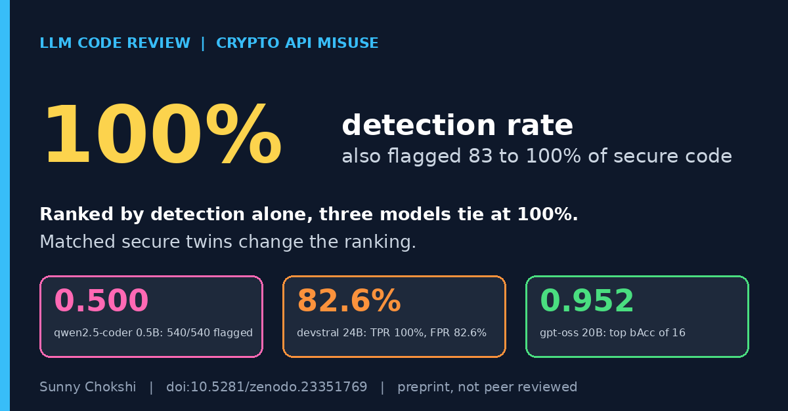

Detection rate alone ranks the worst LLM code reviewers first
Sunny Chokshi. October 28, 2026.

When I tested 16 open LLM code reviewers, the first table in my paper showed which of them separate secure code from vulnerable code at all. It is worth reading on its own.
Get the preprint on ZenodoCryptoBench dataset on Zenodo
The setup
I used 180 Python snippets across nine cryptographic misuse classes, ten pairs per class. Each pair has a vulnerable snippet and a secure twin that does the same task correctly. I ran 16 open models, from 0.5B to 120B parameters, with three repeats per snippet, which gives 8,640 scored calls. For each model I report the true positive rate (TPR, vulnerable snippets flagged), the false positive rate (FPR, secure twins flagged), and balanced accuracy, the average of TPR and one minus FPR. A model that flags everything scores 0.5.
Why detection rate misleads
Judged on TPR alone, codellama 7B, devstral 24B, and qwen2.5-coder 0.5B would rank near the top, each at or near 100%. Their FPRs tell a different story. codellama 7B and qwen2.5-coder 0.5B flagged 539 and 540 of 540 scored calls. devstral 24B flagged 82.6% of the secure twins. Three more models (codellama 34B, qwen2.5-coder 1.5B and 3B) also flagged more than 70% of secure code. The 0.5B model also left out the requested verdict line in all but 37 of its 540 replies.
With the secure twins in the table, the order changes. Of the 16 models, gpt-oss 20B had the highest balanced accuracy, 0.952, with a TPR of 93.7% and an FPR of 3.3%. Ranked by TPR alone, these models would sit at or near the top.
Does model size help?
Size and score go together to some degree, but size does not settle the ranking. Over all 16 models, parameter count and balanced accuracy are related (Spearman 0.76). Across families it did not order the results: codellama 34B (0.609) and devstral 24B (0.587) were among the weakest of the larger models. Even within gpt-oss, the 120B model (0.931) scored below the 20B (0.952).
What I take from this test: a detection rate on its own rewarded models that said "vulnerable" almost every time. I would report the false positive rate next to it and use secure twins that match the vulnerable code.
Limits
The snippets are short Python functions, reviewed one at a time, so the result speaks to a single-snippet review pass. The models are open models run with temperature 0. I tested only open-weight models and only Python, so I make no claim about closed models or other languages. TPR counts a vulnerable verdict given for any reason, and I did not check whether each detection named the right misuse. This is a preprint, it is not peer reviewed, and it carries the notice that it has been submitted to the IEEE for possible publication.
The same paper goes on to test what happens when the same misuse is written indirectly. I covered one result from that part in my earlier post on a hex key size.
Read and cite
Preprint on Zenodo (doi:10.5281/zenodo.23351769) · Paper page and PDF
Related work in the same line, an earlier benchmark: CryptoBench (doi:10.5281/zenodo.23067051).
Cite as: Chokshi, S. (2026). Does Indirection Hurt? Paired Evidence on LLM Review of Indirectly Written Cryptographic API Misuse [Preprint]. Zenodo. https://doi.org/10.5281/zenodo.23351769
Dataset: Chokshi, S. (2026). CryptoBench: A benchmark of cryptographic API misuse for evaluating LLM code reviewers [Dataset]. Zenodo. https://doi.org/10.5281/zenodo.23067051
Sunny Chokshi, PhD student, Information Technology, University of the Cumberlands. Research: adversarial robustness of LLMs in cybersecurity. ORCID · GitHub